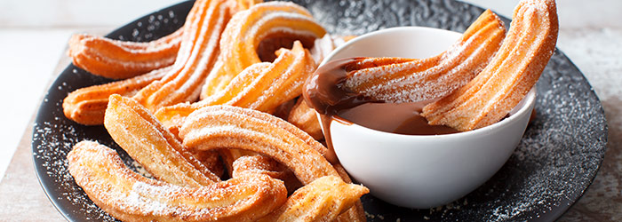

Churros: How to make delicious ones! :)
Churros is not only amazing food, Churros is life.
This recipe shows you how to make great ones.

Ingredients
- 1 cup water
- 2.5 tablespoon white sugar
- 0.5 tablespoon salt
- 2 tablespoons vegetable oil
- 1 cup all-purpose flour
- 2 quarts oil for frying
- 0.5 cup white sugar, or to taste
- 1 teaspoon ground cinnamon
Instructions
- Combine water, 2 1/2 tablespoons sugar, salt, and 2 tablespoons vegetable oil in a small saucepan and place over medium heat. Bring to a boil and remove from the heat. Stir in flour, stirring until mixture forms a ball
- Heat oil for frying in a deep fryer or deep pot to 375 degrees F (190 degrees C).
- Transfer the dough to a sturdy pastry bag fitted with a medium star tip. Carefully pipe a few 5- to 6-inch strips of dough into the hot oil; work in batches so you don't crowd the fryer. Cook until golden; use a spider or slotted spoon to transfer churros to paper towels to drain.
- Combine 1/2 cup sugar and cinnamon. Roll drained churros in cinnamon and sugar mixture.